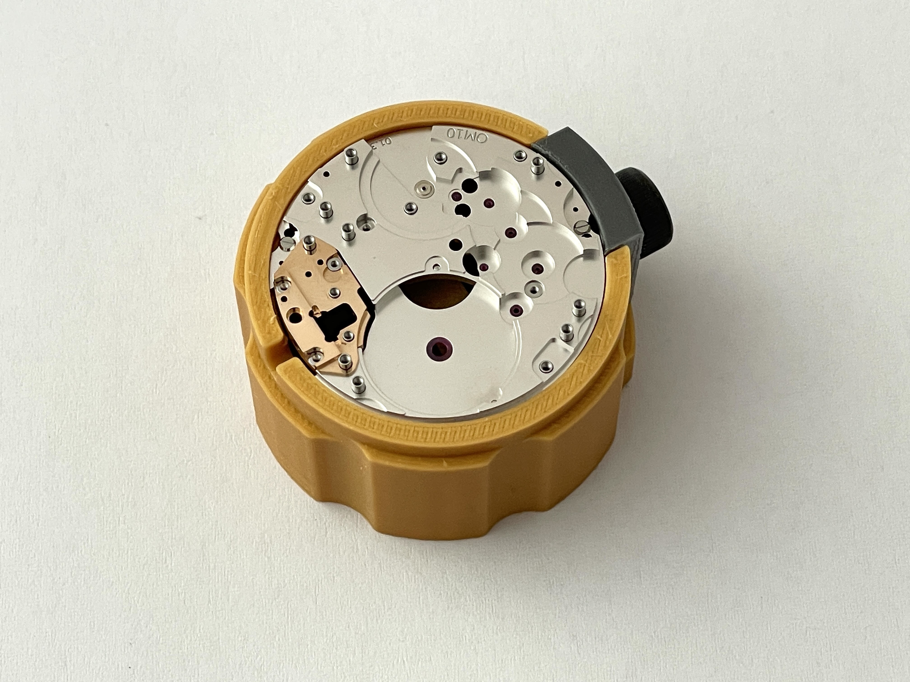

The original V5 holder.
This is the holder supplied in your downloaded ZIP. Compare the original photograph with the two original CAD pieces below.
01 / SUPPLIED PHOTOGRAPH

Unchanged photograph from the archive. The movement is shown mounted in the holder.
02 / ORIGINAL CAD · HOLDER + CLAMP
Loading the two original CAD pieces…
Drag to rotate · Scroll / pinch to zoom
Source geometry at the coordinates supplied in the STEP files. Neutral materials expose the shape; the movement and photographic hardware are not added to this CAD view.
This is a bench holder, not the external watch case. The photograph’s yellow part supports the movement during workshop use. Your archive contains the holder body, its clamp, a drawing and this photograph.